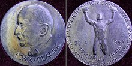

Awards
-
1921 Nobel Peace Prize
-
For services to Theoretical Physics, and especially for his discovery of the law of the photoelectric effect.

-
1925 Copley Medal
-
Outstanding achievements in research in any branch of science

-
1926 Gold Medal of the Royal Astronomical Society
-
Outstanding personal researches in the fields of astronomy and geophysics

-
1929 Max Planck Medal
-
The highest award of the German Physical Society, the world's largest organization of physicists, for extraordinary achievements in theoretical physics.

-
1931 Prix Jules Janssen
-
Given to a professional French astronomer or to an astronomer of another nationality in recognition of astronomical work in general, or for services rendered to Astronomy.

-
1936 Franklin Institute Awards
-
World-changing scientists, engineers, inventors, and industrialists—all of whom reflect Benjamin Franklin’s spirit of curiosity, ingenuity, and innovation.

|